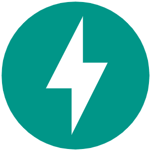
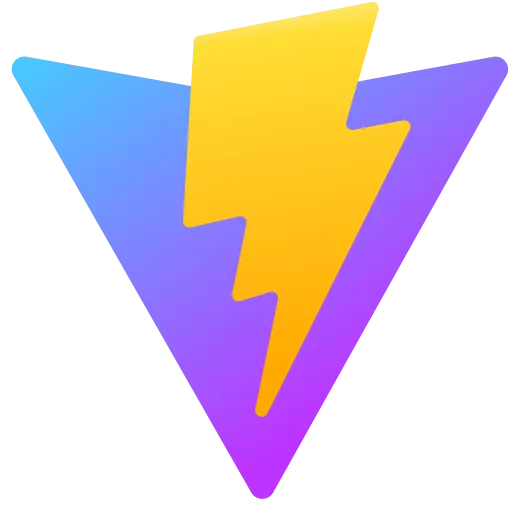
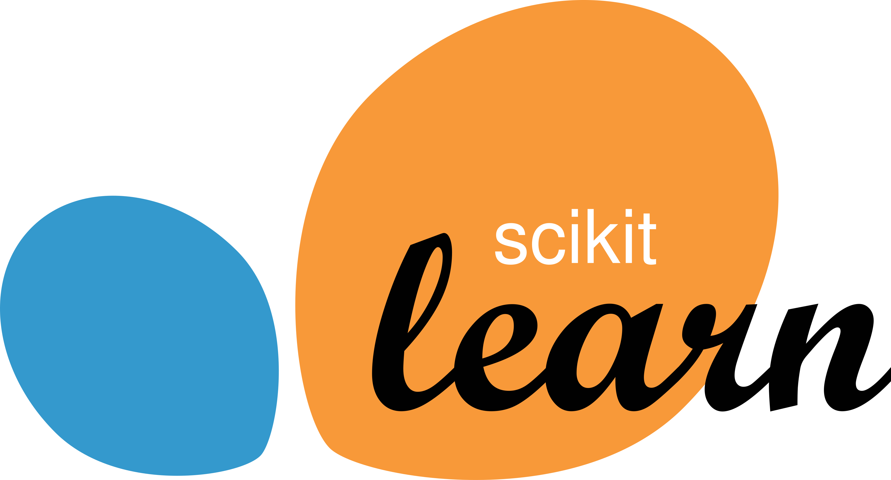
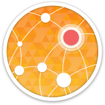

Telemetry Ingestion & Log Intelligence
Drain3 template mining plus a three-layer hybrid classifier turn raw logs and runtime metrics into labelled failure windows for every service in the fleet.
AI-powered failure prediction for cloud-native microservices. Anticipating CPU spikes and memory failures minutes before they strike through intelligent monitoring and automated response.
This project aims to develop a proactive SRE layer for containerised microservice fleets using telemetry fusion and machine learning. The system focuses on four key areas: Telemetry Ingestion & Log Intelligence, Queue-Aware CPU Spike Analysis, Memory Usage Prediction, and CPU Spike Prediction with Response. It uses sidecars, queueing theory and random-forest models to anticipate failure minutes before it happens. The goal is to replace reactive threshold alerts with verified, explainable warnings — each carrying a cause, a runbook and a safe response path.
Cloud microservices rarely fail in isolation. CPU saturation and heap churn compound each other: a slow endpoint lengthens queue depth, queued requests hold memory, memory pressure triggers aggressive garbage collection, and GC pauses extend CPU residency — a feedback loop that ends in an OOM kill or a crash-loop restart. Conventional monitoring is reactive and single-signal. It alerts on a static CPU or memory threshold, long after the window in which action was still cheap. The core problem is therefore not detecting failure, but anticipating it — and doing so with enough confidence that an operator trusts the alert enough to act on it.
The main objective of this research is to use multi-resource telemetry fusion to anticipate microservice failure early enough for safe, assisted remediation. The system aims to enhance reliability, responsiveness and operator trust through low-overhead ingestion, queue-aware modelling, explainable predictions and graduated mitigation. By integrating these capabilities, the project seeks to create calmer, more predictable on-call operations for cloud-native teams.
Drain3 template mining plus a three-layer hybrid classifier turn raw logs and runtime metrics into labelled failure windows for every service in the fleet.
Queueing-theory telemetry — arrival versus service rate, backlog and the Queue Pressure Index — distinguishes a service under pressure from one that is merely busy.
A 200-tree balanced Random Forest over 22 heap and GC features predicts memory-driven failure, with SHAP explanations stable across every held-out project.
A 100-tree Random Forest on CPU-only features anticipates failure 3.67 minutes ahead on average, then fuses memory context into a tiered, human-approved response.
The proposed solution is an integrated prediction-and-response layer for microservice fleets. It monitors queue-aware CPU telemetry and memory churn, fuses both signals through a dual-threshold decision gate, and converts each alarm into an explainable, graduated response — from soft load shedding to circuit-breaker isolation — with a human approving every step.
The main features of our proposed system are:
This comprehensive demonstration provides viewers with an exclusive look at our Sentinel AIOps System in operation. Verified warnings with a 0.951 mean F1 and a 1.74% false-alarm rate, anticipating 86.5% of failures an average of 3.67 minutes ahead — a firsthand experience of calmer, more predictable reliability engineering.
Here are the tools and technologies harnessed in our project to create an innovative and robust solution. From telemetry sidecars to explainable models and live dashboards, we integrate a focused set of languages, frameworks and platforms — enabling us to build a reliable, observable system tailored to the needs of SRE teams.
Our system integrates key features for seamless data access, real-time monitoring, and AI-driven insights.
We use proven ML, API and cloud tooling for fast, observable and reproducible research.

FastAPI React
Vite
scikit-learn XGBoost SHAPDrain3 Docker Azure Container Apps
aiohttp FlaskThis section records the domain knowledge behind the project — what the literature establishes, where the gap lies, and how our methodology addresses it.
The survey behind this project spans four strands: static threshold alerting still used in most operations dashboards; supervised classifiers for failure prediction (decision trees, random forests, boosting, SVM and nearest-neighbour methods); queueing-theoretic modelling of saturation through arrival-versus-service dynamics; and explainable AI techniques that make model outputs actionable for operators. The seven studies informing this work are listed on our research poster. Together they establish that machine learning beats fixed thresholds on precision — but almost always on randomly split data, with CPU and memory evidence handled in isolation.
Four gaps remain open. First, production monitoring is still reactive and single-signal, with static thresholds producing false-alarm rates near 15%. Second, CPU saturation and memory pressure are modelled separately and never fused at decision time, although real incidents involve both. Third, published results rely on random row splits that leak near-identical behaviour across the train–test boundary, so reported accuracy rarely survives contact with an unseen service. Fourth, alerts arrive without a cause, a runbook, or a safe response path — leaving the operator to diagnose under pressure.
How can a microservice fleet anticipate failure early enough for safe remediation — with enough confidence that an operator trusts the warning, knows its cause, and has an approved response? See also the problem statement under Scope.
(1) Low-overhead, stack-agnostic telemetry ingestion. (2) Queue-aware CPU saturation anticipation. (3) Memory churn and leak localisation. (4) Multi-resource fusion with progressive, human-approved mitigation. Full statements under Scope.
Here you can track the significant milestones achieved throughout our research journey. These milestones represent crucial stages of our project's progress, reflecting the key activities and accomplishments we have reached.
In this stage the topic we selected — proactive failure prediction for microservices — was evaluated and approved.
A project proposal was prepared to present our objectives, scope and plan, and to convince the panel and supervisor to accept it.
Demonstrated 90% progress, including the fused decision engine and the SRE Command Center dashboard.
In this stage we demonstrated our progress up to 50%, including the telemetry pipeline and the first trained predictors.
Thesis document of the project, covering findings, methodology and evaluation in full.
Finalized and demonstrated 100% progress, including the live end-to-end system and mitigation workflow.
Published research findings and methodology from our telemetry fusion and early-warning experiments.
Here you can find a collection of essential documents that provide a comprehensive overview of our research project. These documents serve as valuable resources, offering insights into the objectives, plans and progress of our work.
A formal, typically short document that describes the project in its entirety — including objectives and how it will be carried out.
Open Project Charter →A core document that helps focus on the substance of the proposed plan, using an easy-to-follow project proposal outline.
Open Project Proposal →A list of tasks to be completed, providing details on meeting discussions and progress tracking.
Open Checklist →A record of daily activities, providing details on meeting discussions and progress tracking.
Open Logbook →Academic writing based on original research, including analysis and interpretation of findings.
Open Research Paper →A comprehensive document showcasing research findings, methodology and expertise, contributing to academic insights.
Open Thesis →Here you can explore the various presentations we have delivered throughout our research journey. These presentations serve as crucial moments for sharing our progress, concepts and achievements with the audience, including the project panel and our supervisor.
In this presentation, our group presented our concept to the panel as well as our supervisor.
Open Proposal Presentation →The presentation we developed to demonstrate our system's 50% progress.
Open Progress Presentation 1 →The presentation we developed to demonstrate our system's 90% development and the achievements we made.
Open Progress Presentation 2 →The presentation we developed to demonstrate our system's 100% development and the achievements we made.
Open Final Presentation →An informative and visually engaging snapshot of the research project, highlighting objectives, methods and findings.
Open Poster Drive folder →A live demonstration showcasing the working system — queue-aware telemetry updating in real time on Azure.
Open Demo Drive folder →Here you can get to know the dedicated and talented members of our research team. We are a group of passionate individuals who share a common goal of advancing knowledge and making a positive impact through our research projects.
Supervisor
Head | Department of Software Engineering | Faculty of Computing
Co-Supervisor
Lecturer | Department of Software Engineering | Faculty of Computing
Leader
Focus: CPU Spike Predictor & Response
Faculty of Computing, SLIIT
Member
Focus: Memory Usage Predictor
Faculty of Computing, SLIIT
Member
Focus: Telemetry Ingestion & Logs
Faculty of Computing, SLIIT
Member
Focus: Queue-Aware Analyzer
Faculty of Computing, SLIIT
We are available for questions, feedback, or collaboration opportunities. Let us know how we can help!